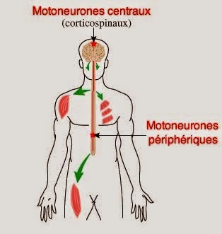
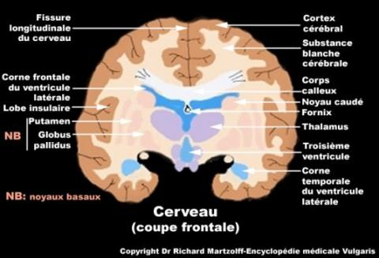
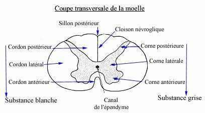
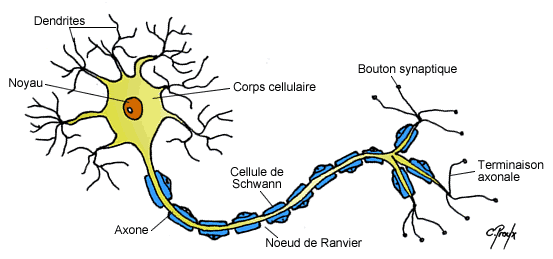

Le systeme nerveux
Definition
Le systeme
nerveux est le centre d'integration et de traitement des donnees. C'est
le siege des emotions, de la pensee, de la conscience. Mais il a aussi
la teche du maintient de l'homeostasie. Il remplit trois fonctions
liees: la reception et le transport de l'information sensorielle, mais
aussi son integration et de la reponse a ce stimulus.
Organisation
du systeme nerveux
- Systeme nerveux
cerebro-spinal :
- Systeme
nerveux central :
- Moelle epiniere.
- Encephale :
- Cerveau.
- Tronc cerebral.
- Cervelet.
- Systeme
nerveux peripherique :
- Nerfs creniens.
- Nerfs rachidiens.
- Systeme nerveux
vegetatif :
- Systeme
nerveux sympathique.
- Systeme
nerveux parasympathique.
Le
tissu nerveux : la cellule nerveuse,
le neurone
Le tissu
nerveux est compose de deux cellules : les neurones et les cellules de
la nevroglie, celles-ci ont une fonction de soutien, de nutrition et
d'isolement des neurones (elles forment les gaines de myeline).
Le neurone
Le neurone
est une cellule nerveuse, element de base du tissu nerveux. Il est
compose de d'une membrane, un noyau, du cytoplasme et de neurofibrilles.

Le neurone est compose de deux
substances
- Substance grise : zone formee des corps
cellulaires des neurones.
- Substance blanche : zone formee des
prolongements des neurones (axone et dendrites).
Le neurone possede deux prolongements
- Dendrites
: prolongements cellulaires courts aux nombreuses ramifications, assez
nombreux. Elles forment la structure receptrice, recevant de tres
grands nombres de signaux, grece a la surface qu'elles couvrent. Leurs
points de contact, les synapses, sont des lieux de transmission
chimiques (les neurotransmetteurs).
- Axone
: prolongement cytoplasmique unique qui transmet l'influx nerveux du
corps cellulaires vers l'extremite de l'arborisation. L'axone est
protege par la gaine de myeline.
- La gaine
de myeline: cette gaine isole electriquement les axones
les uns des autres, mais accroet egalement la vitesse du transport
electrique. La gaine est composee d'un tres grand nombre de cellules,
dites cellules de Schwann, ne se touchant pas.
Le
systeme nerveux central
Le systeme
nerveux central
comporte deux parties :
- L'encephale.
- La moelle epiniere.
L'encephale
L'encephale est constituer de 3
parties :
- Le cerveau.
- Le tronc cerebral.
- Le cervelet.
Le cerveau
Le cerveau
est loge dans la partie superieure et anterieure de la boete crenienne.
Il est
constitue de 2 hemisphere cerebraux creuses par les ventricules
contenants le liquide cephalo-rachidien.
Chaque hemisphere est marque par des scissures qui delimitent les lobes
: 4 lobes par hemisphere :
- Lobe frontal.
- Lobe parietal.
- Lobe temporal.
- Lobe occipital.
Le cerveau
est compose d'une substance grise a sa peripherie, et une substance
blanche centrale.

Le tronc cerebral
Le tronc
cerebral est situe entre le cerveau et la moelle epiniere.
Il donne
naissance aux 12 paires de nerfs creniens.
Il est
compose de substance blanche a la peripherie et substance grise au
centre.
Il a 2
fonctions :
- Voie de conduction.
- Centre de certains centres vegetatifs.
Le cervelet
Le
cervelet est situe a la base du crene, derriere le tronc cerebral.
Il a pour
rele :
- L'equilibre.
- La coordination des mouvements.
- Le tonus musculaire.
La moelle epiniere
La moelle
epiniere fait suite
au tronc cerebral. Elle est enfermee dans le canal rachidien.
Elle est
composee d'une partie
centrale, la substance grise, et d'une partie peripherique, la
substance blanche. Au centre se trouve le canal de l'ependyme.
La moelle
epiniere donne
naissance aux 31 paires de nerfs rachidiens. Chaque nerf contient 2
racines : une posterieure qui est sensitive et l’autre anterieure qui
est motrice.
Elle a
plusieurs fonctions :
- Arc reflexe : par la substance grise.
- Voie de transmission des influx vers les
centres superieures :
par la substance blanche.

Le syteme
nerveux peripherique
Nerfs creniens
Les nerfs
creniens sont aux nombres de 12 paires, ils naissent au tronc
cerebral.
Il en existe 3 types :
- Sensitif : transmet l'information de la
peripherie au centre.
- Moteur : transmet l'information du
centre a la peripherie.
- Mixte : possede la fonction sensitive et
motrice.
Nerfs rachidiens
Les nerfs
rachidiens sont aux nombres de 31 paires, ils naissent a la
moelle epiniere.
Ils sont
constitues d'une racine anterieure (motrice) et
d'une racine posterieure (sensitive), ces deux racines se reunissent
apres la sortie de la moelle epiniere pour former le nerf rachidien.
Certains
des nerfs, s'anastomosent pour former des plexus
(ensemble de fibres nerveuses innervant un territoire organique
determine) : cervical, brachial, dorsal, lombaire, sacre, honteux.
Le
systeme nerveux vegetatif
Le systeme
nerveux vegetatif dirige et coordonne les fonctions internes
de l'organisme, son fonctionnement est automatique.
Il est compose par :
- Des centres nerveux : centres visceraux,
centres medullaires, centres
du tronc cerebral, centres du diencephale.
- Des nerfs du systeme vegetatif : fibres
sensitives et fibres motrices.
Le systeme sympathique
Le systeme
sympathique se presente sous forme d'une serie de ganglions
etages tout le long du rachis, unis les uns aux autres par des filets
nerveux constituant la chaene sympathique.
Le
sympathique se distribue a l'ensemble du corps : cœur, vaisseaux,
œil, glandes, tube digestif, bronche, appareil genital, foie, rate.
Le
neurotransmetteur du systeme sympathique est l'adrenaline.
Le systeme parasympathique
Le systeme
parasympathique est forme par une serie de fibres nerveuses
annexees a certains nerfs du systeme cerebro-spinal (systeme nerveux
central + systeme nerveux peripherique) dont elles suivent le trajet.
Le
neurotransmetteur du systeme parasympathique est l'acetylcholine.
L'influx
nerveux

Voir aussi :